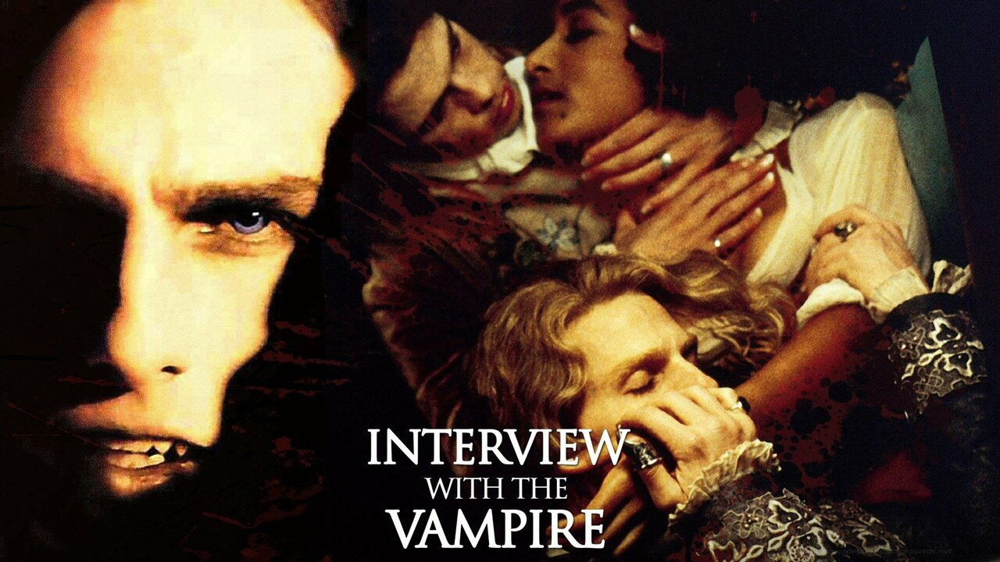
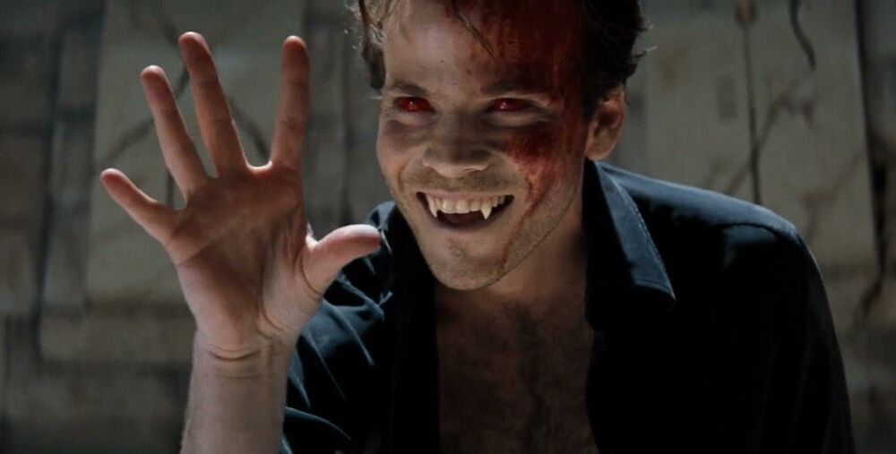

Dracula
It is no surprise that "Dracula" is the first image that springs to mind when the topic of "the vampire" arises. The novel, written by Irish author Abraham (Bram) Stoker in 1897 introduces us to "count dracula". a resident of Transylvania, Romania, deep within the Carpathian mountains.Originally a noble man, he was succumbed to the bloodlust...
"His face was a strong... aquiline...
His eyebrows were very massive, almost meeting over the nose...
The mouth, so far as I could see it under the heavy moustache, was fixed
and rather cruel-looking, with peculiarly sharp white teeth...
The general effect was one of extraordinary pallor."
Jonathan Harker's Journal
The tale takes us from Transylvania to the British Coast (Whitby) where Dracula has come in rder to satisfy an unrequited love. What ensues is one of the most enduring tales ever told. IT became a best seller in its own time and stands at the pinnacle of the Victorian Gothic horror creations along with Mary Shelley's "Frankenstein"

Interview with Vampire
"The Vampire Chronicles" is a series of novels written by Anne Rice, starting with the publication of "Interview with the Vampire" in 1976. The story revolves around the vampire Louis de Pointe du Lac, who recounts his immortal life to a journalist. The series delves into the complex lives of vampires, exploring their struggles with immortality, morality, and their relationships with both humans and other supernatural creatures. Rice's richly detailed and atmospheric storytelling, coupled with compelling characters such as Lestat de Lioncourt, has made "The Vampire Chronicles" a beloved and influential contribution to vampire literature, shaping contemporary vampire mythology.

Vampires in modern art
Diversification and Contemporary Vampire Lore: In recent years, vampires have undergone further diversification in popular culture. Works like the TV series "True Blood" and the film "Let the Right One In" explored different interpretations and subversions of vampire tropes. The vampire genre has expanded beyond traditional folklore, incorporating elements of romance, horror, comedy, and even superheroes in series like "What We Do in the Shadows." This ongoing diversification reflects the enduring fascination and adaptability of vampire mythology in modern storytelling.